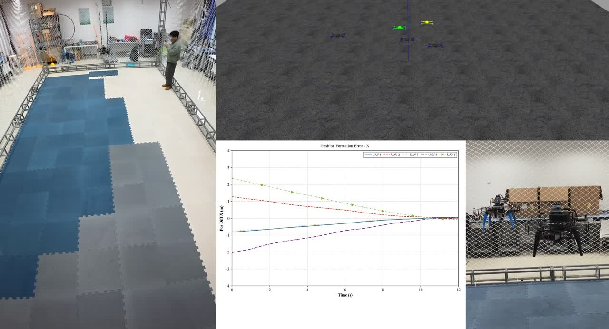
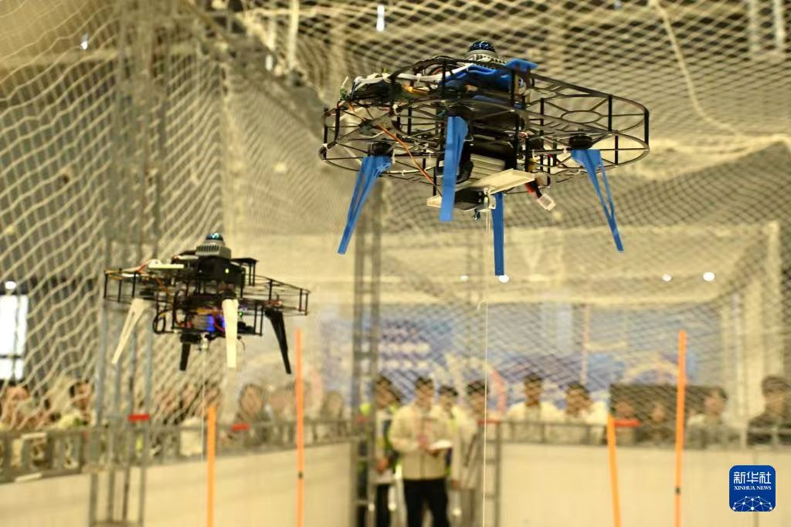
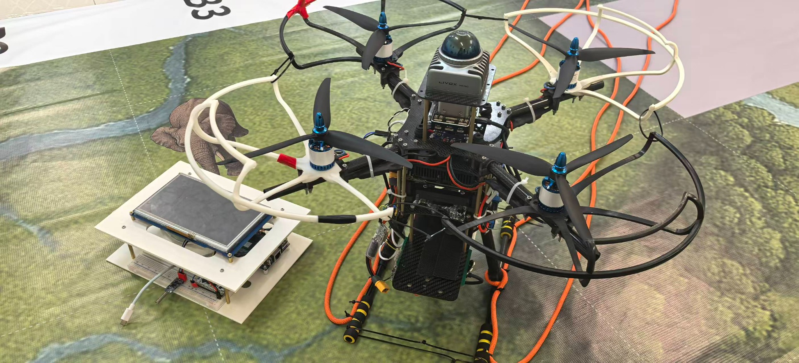

Multi-UAV Control
Lead-Time Synchronized Formation Control for Multi-UAV Systems
从控制器与扰动观测器设计，到理论证明、HIL / mixed-reality 验证和真机编队实验。

从控制器与扰动观测器设计，到理论证明、HIL / mixed-reality 验证和真机编队实验。

GPS 拒止环境下的双无人机协同运输，结合 FAST-LIO2、PX4 与改进人工势场法。

围绕自主巡航、目标搜索、状态机与空地系统集成完成真实系统开发与比赛验证。
Minor Revision · SCI Q1 · 第三作者
Under Review · SCI Q2 · 第二作者
Radio Communications Technology · 北大核心期刊